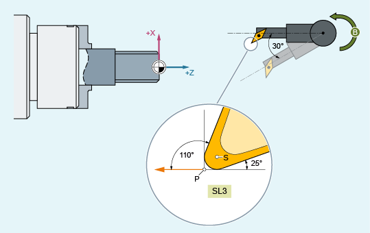

For a tool with cutting edge position 3 and an orientable tool carrier that can rotate the tool around the B axis, the cutting edge position shall be modified after a tool rotation with the aid of the CUTMOD command.
S: | Cutting edge center point |
P: | Cutting edge reference point |
SL: | Cutting edge position |
| Program code | Comment |
|---|---|
| N10 $TC_DP1[1,1]=500 | |
| N20 $TC_DP2[1,1]=3 | ;Cutting edge position |
| N30 $TC_DP3[1,1]=12 | |
| N40 $TC_DP4[1,1]=1 | |
| N50 $TC_DP6[1,1]=6 | |
| N60 $TC_DP10[1,1]=110 | ; Holder angle |
| N70 $TC_DP11[1,1]=3 | ; Cut direction |
| N80 $TC_DP24[1,1]=25 | ; Clearance angle |
| N90 $TC_CARR7[2]=0 $TC_CARR8[2]=1 $TC_CARR9[2]=0 | ; B axis |
| N100 $TC_CARR10[2]=0 $TC_CARR11[2]=0 $TC_CARR12[2]=1 | ; C axis |
| N110 $TC_CARR13[2]=0 | |
| N120 $TC_CARR14[2]=0 | |
| N130 $TC_CARR21[2]=X | |
| N140 $TC_CARR22[2]=X | |
| N150 $TC_CARR23[2]="M" | |
| N160 TCOABS CUTMOD=0 | |
| N170 G18 T1 D1 TCARR=2 | ; X Y Z |
| N180 X0 Y0 Z0 F10000 | ; 12.000 0.000 1.000 |
| N190 $TC_CARR13[2]=30 | |
| N200 TCARR=2 | |
| N210 X0 Y0 Z0 | ; 10.892 0.000 -5.134 |
| N220 G42 Z–10 | ; 8.696 0.000 –17.330 |
| N230 Z–20 | ; 8.696 0.000 –21.330 |
| N240 X10 | ; 12.696 0.000 –21.330 |
| N250 G40 X20 Z0 | ; 30.892 0.000 –5.134 |
| N260 CUTMOD=2 X0 Y0 Z0 | ; 8.696 0.000 –7.330 |
| N270 G42 Z–10 | ; 8.696 0.000 –17.330 |
| N280 Z–20 | ; 8.696 0.000 –21.330 |
| N290 X10 | ; 12.696 0.000 –21.330 |
| N300 G40 X20 Z0 | ; 28.696 0.000 –7.330 |
| N310 M30 |
In block N180, initially the tool is selected for CUTMOD=0 and non-rotated tool holders that can be orientated. As all offset vectors of the tool holder that can be orientated are 0, the position that corresponds to the tool lengths specified in $TC_DP3[1,1] and $TC_DP4[1,1] is approached.
The tool holder that can be orientated with a rotation of 30° around the B axis is activated in block N200. As the cutting edge position is not modified due to CUTMOD=0, the old cutting edge reference point is decisive just as before. This is the reason why in block N210 the position is approached, which keeps the old tool nose reference point at the zero (i.e. the vector (1, 12) is rotated through 30° in the Z/X plane).
In block N260, contrary to block N200, CUTMOD=2 is effective. As a result of the tool holder rotation that can be orientated, the modified cutting edge position becomes 8. Deviating axis positions also result from this.
The tool radius compensation (TRC) is activated in blocks N220 and/or N270. The different cutting edge position in both program sections has no effect on the end positions of the blocks in which the TRC is active; the corresponding positions are therefore identical. The different cutting edge positions only become effective again in the deselect blocks N260 and/or N300.